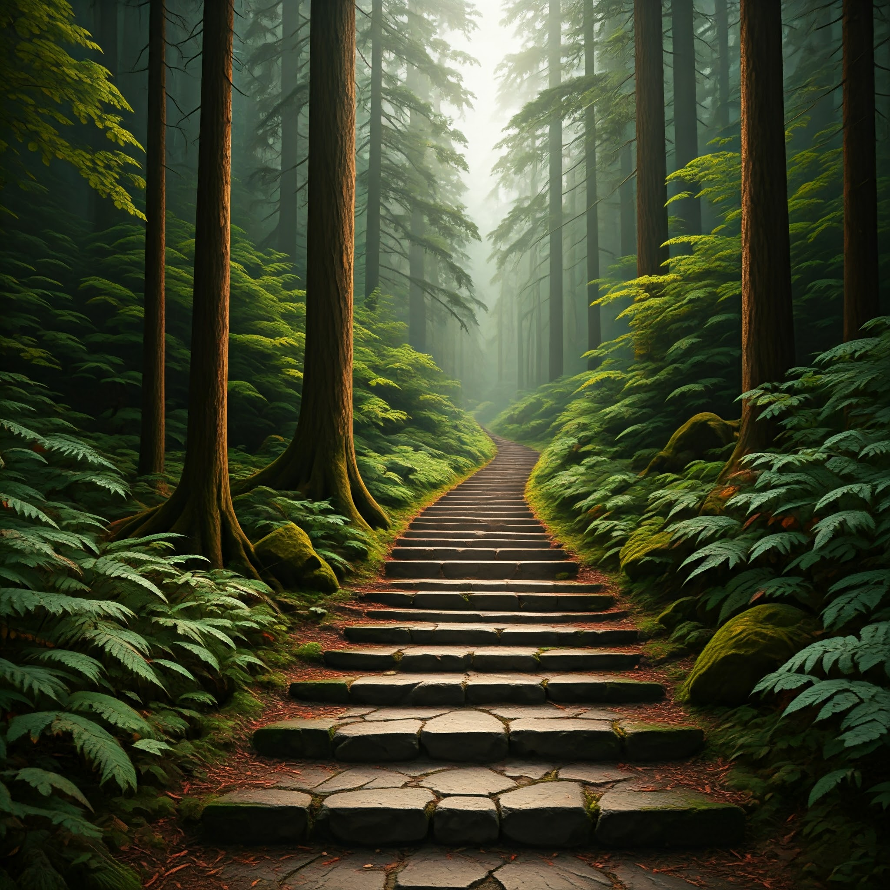

Arey! You have just entered the forest of Vanshika. Choose wisely, kyunki yeh forest kaafi bada hai!

ADENDUMIn HTML, we used !DOCTYPE html to make sure the webpage works in modern browsers. The meta tags help with character encoding and make the webpage fit well on any screen size. We added a title using the title tag, and linked an external CSS file for styling the page with link rel="stylesheet". We also added an image tag for the story image, which is hidden at first, and a footer to show the last updated time using JavaScript.In CSS, we styled the page. The body is centered using Flexbox, and we added a nice background effect with a gradient. The title (h1) has a large font size, text-shadow, and changes color when you hover over it. The story text box has padding, a background, rounded corners, and a shadow for a 3D effect. Buttons are styled with a blue background, rounded edges, and they change color when clicked or hovered over. The image has a fixed size with rounded corners, and it grows slightly when you hover over it. Lastly, in JavaScript, we added a script to show the last modified time of the page.